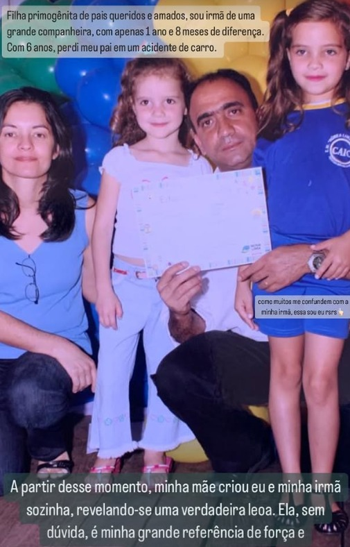
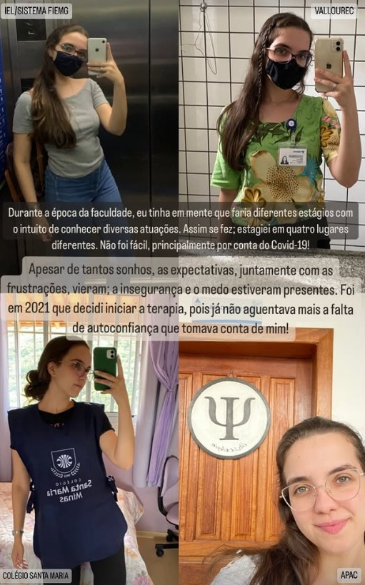

Terapia Individual
Atendimento personalizado para adultos, com escuta acolhedora e tecnicas baseadas em evidencias para ansiedade, depressao, autoestima e relacoes.
Atendimento humanizado e especializado para transformar sua saude mental com acolhimento, escuta e tecnicas baseadas em evidencias.
A historia por tras do cuidado
Mineira, nasci em 1999. Desde a infancia, sempre fui muito estudiosa e responsavel, dedicando-me as tarefas escolares. Embora tenha escolhido a psicologia, quando crianca, pensei em seguir diversas profissoes.
Filha primogenita de pais queridos e amados, sou irma de uma grande companheira, com apenas 1 ano e 8 meses de diferenca. Sempre sonhadora e com uma grande vontade de viver, estudei em diferentes escolas.
Com 6 anos, perdi meu pai em um acidente de carro. A partir desse momento, minha mae criou eu e minha irma sozinha, revelando-se uma verdadeira leoa. Ela, sem duvida, e minha grande referencia de forca e determinacao!
Essa experiencia me ensinou cedo sobre resiliencia, sobre como a dor pode nos fortalecer e sobre a importancia de cuidar da gente e de quem amamos.

Em uma das escolas, tive a oportunidade de fazer uma viagem para a Espanha juntamente com amigos e professores. Foi nessa epoca que surgiu o desejo de me tornar psicologa, e assim me dediquei para conquistar a tao sonhada bolsa do Prouni.
E assim aconteceu: recebi a bolsa integral, 100%! Foi a confirmacao de que com dedicacao e fe nos sonhos, tudo e possivel.
Durante a epoca da faculdade, eu tinha em mente que faria diferentes estagios com o intuito de conhecer diversas atuacoes. Assim se fez: estagiei em quatro lugares diferentes. Nao foi facil, principalmente por conta do Covid-19!
Apesar de tantos sonhos, as expectativas, juntamente com as frustracoes, vieram. A inseguranca e o medo estiveram presentes.

Foi em 2021 que decidi iniciar a terapia, pois ja nao aguentava mais a falta de autoconfianca que tomava conta de mim! Aqui estou eu, uma mulher autoconfiante que acredita na transformacao pela psicoterapia, por isso, continuo a terapia com minha psicologa.
"E o melhor: agora tenho a oportunidade de impactar varias pessoas com a profissao que tanto me auxiliou neste processo!"
Hoje sei que minha vivencia e minha historia me tornam uma profissional mais empatica, mais humana e mais preparada para acolher voce em sua jornada.
"Sei na pele o que e sentir perdido, inseguro e sem forcas.
E por isso que hoje acolho voce com a empatia de quem ja esteve do outro lado."
Servicos
Atendimento personalizado para adultos, com escuta acolhedora e tecnicas baseadas em evidencias para ansiedade, depressao, autoestima e relacoes.
Espaco seguro para o casal resgatar a comunicacao, resolver conflitos e reconstruir a conexao com ferramentas praticas.
Aprenda a identificar gatilhos, controlar crises e desenvolver estrategias para lidar com a ansiedade no dia a dia.
Trabalhe a relacao consigo mesmo, reconheca seus padroes e desenvolva uma imagem mais saudavel de si.
Consultas por video chamada com a mesma qualidade do presencial, de onde voce estiver, com horarios flexiveis.
Apoio para escolhas de carreira, transicoes profissionais, burnout e desenvolvimento de proposito de vida.
Avaliacoes reais
"Minha experiencia esta sendo muito edificante, Daiane e uma psicologa excelente passa muito confianca, a cada sessao me sinto mais preparado para enfrentar o dia-dia. Vivemos em mundo frenetico, alta demanda em todas area de nossas vidas, para isso devemos nos cuidar na parte mais sensivel, que e a nossa mente, por isso recomendo Daiane tem me ajudado muito."
"Excelente profissional! Competente, dedicada e responsavel. Recomendo de olhos fechados!"
"Profissional dedicada e habilidosa, o consultorio e acolhedor e com uma otima localizacao, recomendo demais."
Para quem e a terapia
Deseja cultivar relacionamentos mais saudaveis consigo mesmo e com os outros
Procura o autoconhecimento para compreender o que verdadeiramente faz sentido em sua vida
Almeja uma vivencia mais leve, corajosa e com elevada autoestima
Quer compreender seus pensamentos, medos e preocupacoes
Busca a liberdade de ser autentico, sem sentir-se julgado
Reconhece a necessidade de assumir a responsabilidade por sua vida e transformar sua realidade
Se voce ja passou por terapia anteriormente ou se esta sera a sua primeira experiencia, vou explicar como funciona esse processo.
A psicoterapia e um espaco de acolhimento e escuta, livre de julgamentos e confidencial.
Ofereco acompanhamento nesse processo de transformacao, tanto online quanto presencial em Belo Horizonte (MG).
50 minutos via Google Meet
Bairro Belvedere, Belo Horizonte
// Vamos conversar
Agende sua primeira conversa e descubra como a terapia pode transformar sua jornada de saude mental.